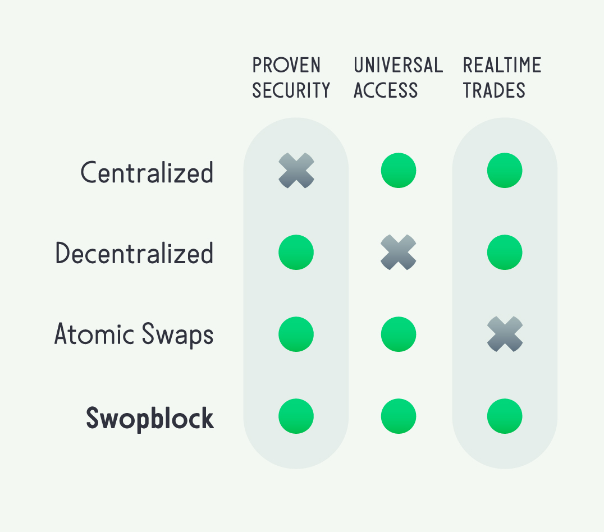
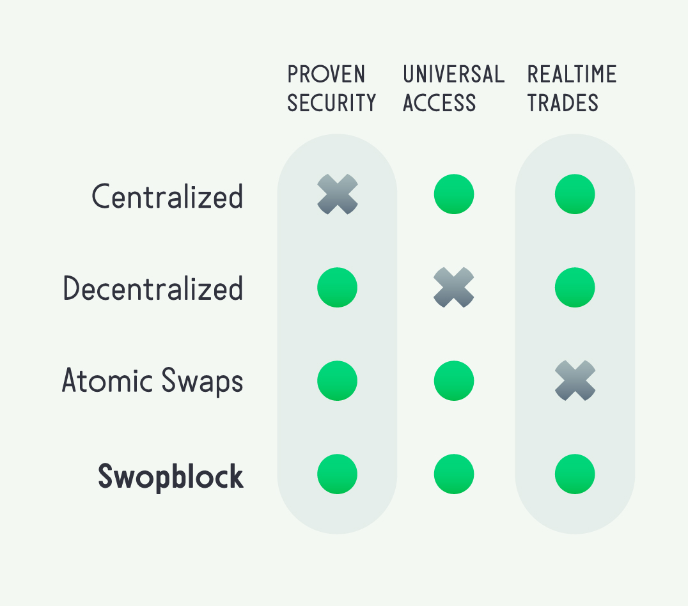

FAQ
Is Swopblock a blockchain?
Yes and No. Swopblock is a virtual blockchain that is an abstraction of preexisting blockchains (i.e. BTC and ETH), therefore Swopblock does not need its own separate database file for trade information. Swopblock’s trade information is embedded within the preexisting blockchains. This enables trades to leverage the proven securities within these preexisting blockchains.
Is Swopblock a cryptocurrency?
Swopblock is a protocol that employs SWBL (Swopblock's crypto) to operate the Swopblock protocol.
What is SWBL? (pronounced ‘swobble’)
SWBL is the trading symbol for Swopblock’s crypto within the Swopblock protocol. Swopblock has created a total of 52,800,000 SWBL. Each SWBL is a percentage of the fixed supply of SWBL and no additional SWBL will be created.
What is the Swopblock Network?
The Swopblock Network is the collection of cryptocurrency blockchain networks that have been adapted to trade SWBL, enabling the Swopblock protocol.
How are Swopblock cross-blockchain trades autonomous?
Swopblock is a decentralized collection of autonomous agents that collectively execute trades agent-to-agent in response to user trade orders. These autonomous agents build order transactions and execution transactions and broadcast them to the native blockchain networks to fulfill the user’s order. For example, in a user order to exchange BTC for ETH the autonomous agents will build native blockchain order transactions, broadcast these transactions in both blockchain networks and fulfill the order with execution transactions that are broadcast to these networks to complete the order.
This enables peers to trade without the need to identify a counterparty and eliminates the need of an exchange party. In otherwords Swopblock is a peer-to-autonomous agents-to-peer exchange.
What big problem does Swopblock solve? Don’t decentralized exchanges already exist?
Decentralized crypto exchanges currently only offer trades that are limited to a single crypto market within a specific blockchain platform. Swopblock offers trades on a specific blockchain platform and extends to offer universal cross-blockchain trades.
What makes Swopblock Network unique in the Crypto Market?
The crypto market has not yet sufficiently solved the exchange security problem. Centralized exchanges have lost or stolen billions worth of cryptos in the last few years. Decentralized exchanges only offer ‘on platform’ exchanges and are not able to perform cross-network/cross-blockchain trading. Of course peers can meet up or use Atomic Swaps, but these exchanges are slow and unresponsive to the continually fluctuating crypto market. The Swopblock exchange protocol solves all three of these problems - offering proven security, universal access, and realtime trades.
 

What exactly does realtime mean?
Swopblock trades happen as fast as central-exchange trading times but without the central-exchange requirement to have your value under their control.
Does Swopblock use Atomic Swaps?
No. Atomic Swaps rely on Hash Time-Locked Contracts, or HTLCs. This technology can be slow. Bitcoin swaps can take over an hour. As we all know, crypto prices can fluctuate quickly, this can incentivize one party to either wait until the market price fluctuates in favor of their trade, or they simply cancel the order to ensure the trade doesn’t disfavor their own potential value. Also, Atomic Swaps are not available to ALL crypto markets.
Swopblock offers market order capabilities (patent pending) that allow peers to buy and sell into and out of a crypto market without the need to identify the counterparty. Traders never lose control of their value. Swopblock trades are autonomous and happen instantly at the realtime market price. This way neither trader can take advantage of time delays and use price fluctuations to their advantage.
Does Swopblock use miners or is the SWBL pre-mined?
All SWBL is created from the start: a 51,200,000 SWBL initial coin offering (ICO) plus a protocol reserve of 1,600,000 SWBL (totaling 52,800,000 SWBL). This fixed supply is liquified on an existing blockchain (such as BTC) in order to launch trading on that particular blockchain. And, when new blockchains are brought onto the Swopblock Network, SWBL will be transferred to the new blockchain in a combination of part voluntary amounts and part protocol determined amounts in order to attract liquidity and begin trading. This allows blockchain developers to avoid centralized exchange listing fees (sometimes in the 10s of millions) and simply customize the Swopblock plugin to bring their blockchain onto the Swopblock Network.
How is the Swopblock Network incentivized?
Swopblock offers a maximum reward of 1.5625% of each transaction amount as a reward to the party that completes the autonomous trade transaction. This reward covers the native blockchain fees resulting in fee-free trade. Users will (directly or through policy) voluntarily offer native blockchain transaction fees to speed confirmation of orders.
Additionally, developers wanting to adapt their blockchain network onto the Swopblock Network will be incentivized by the pre-existing Swopblock Network transferring a protocol determined amount of SWBL to the new blockchain. Developers control availability of a new blockchain to be added to the Swopblock Network not how and when. How and when a new happens autonomously, predetermined by the Swopblock protocol.
When will sufficient liquidity be reached to launch Swopblock?
The liquidity required to launch Swopblock on BTC and ETH has already been raised. This enables the remaining Swopblock investments to be made directly on the post-launched Swopblock Network.
How is it possible ANY cryptocurrency blockchain can join the Swopblock Network?
Swopblock is an open source exchange protocol that provides developers an API for the customization of implementations necessary to join the Swopblock Network. SWBL essentially acts as a blockchain adaptor to the Swopblock protocol.
Do I own SWBL when I invest in Swopblock?
Yes. Swopblock has a private issue capital base aggregated into 25,600,000 SWBL and the crowd funding of an additional 25,600,000 SWBL is available to the public as an Initial Coin Offering (to be phased in four parts) at a base value of 32 SWBL for each 1 USD invested equity. Each SWBL owned is a percentage of the fixed supply of SWBL and is never diluted by additional creation of new SWBL. Your ownership is the same percentage of the total ownership.
Invest in SWBL
How will users receive SWBL?
First Swopblock will launch on Bitcoin blockchain. Then users will download the Swopblock APP. Next users will enter an address into the Swopblock APP to instantiate their SWBL. This address is securely provided by Swopblock and distributes SWBL to user's Swopblock wallet as an opening balance.
When will user's SWBL gain value?
SWBL’s value is determined by the Swopblock protocol that controls the overall SWBL volume, making it scarce when higher values are needed and plentiful when lower values are sufficient. The Swopblock protocol perfectly balances SWBL between supply and demand, always providing enough SWBL available for trade no matter how much supply and demand fluctuate. Therefore SWBL gains value automatically according to the Swopblock protocol when trading volumes increase and/or when crypto values themselves increase.
What happens to the undistributed SWBL?
It remains available to the public via the Swopblock APP. Swopblock will not require all SWBL to be distributed before initial trading commences.
How can I contribute to the development of Swopblock?
You can contribute at Github.com/Swopblock
Is Swopblock patented?
A Provisional Patent Application has been filed and open source licensing includes a royalty-free worldwide paid-up license granted to developers who abide by the Swopblock protocol specifications. This ensures the compatibility of future protocol implementations that adopt existing blockchains into the Swopblock Network. For more info visit Github.com/Swopblock
Is SWBL taxable to its users?
Yes. The IRS has declared that all capital gains on Cryptocurrencies are taxable.
Have another question?
Email us at info@Swopblock.org


© 2O21 Swopblock